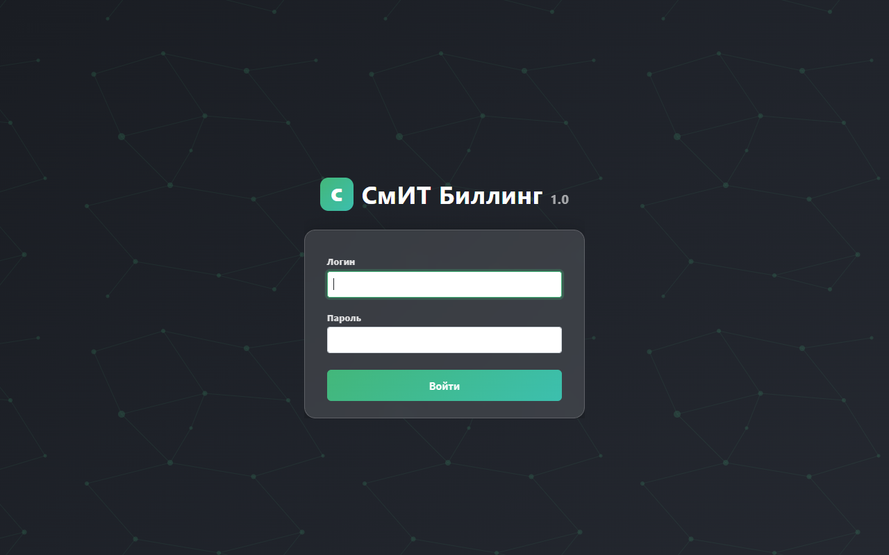
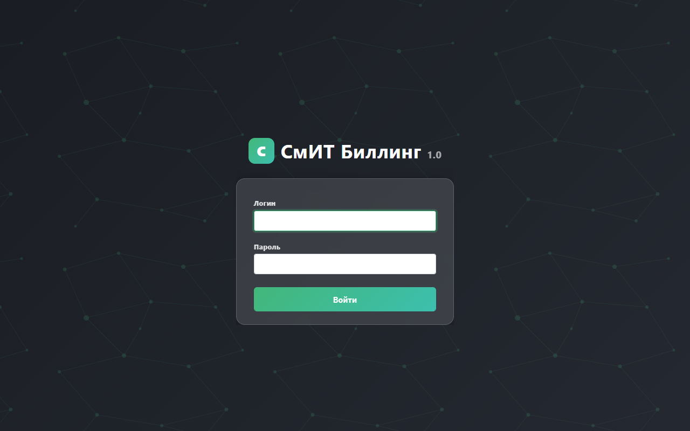

Выпуск Smit Billing v1.5.0 (build 38)
🌍 Что сделано в этом выпуске — коротко
В этом выпуске система обновлена с версии 1.0.0 до v1.5.0 (build 38). В каждой странице настроек биллинга появились иконки со ссылками на нужный раздел документации — оператор теперь может перейти к инструкции прямо из интерфейса, не ища её вручную.
Документация на сайте docs.billing.smit34.ru пополнилась пятью новыми разделами: ЮKassa, Firebase Push, Claude AI, FreeRADIUS и Резервное копирование.
Исправлена критическая ошибка прокси: теперь запросы к Telegram API и Claude AI отправляются через socks5h:// — DNS разрешается на стороне прокси-сервера, что необходимо при работе с российских IP-адресов.
Также устранены две ошибки Celery, из-за которых задачи по блокировке абонентов и IPTV-синхронизации не запускались.
Все изменения задеплоены на тестовый сервер testbill.smit34.ru, выпущен тег v1.5.0 на GitHub с подробными release notes на русском языке.
📋 Содержание
Версия — v1.5.0 (build 38)
Файл billing/version.py обновлён:
VERSION = '1.5.0'
BUILD = '38'Предыдущая версия: 1.0.0 (build 37). Новая версия отображается в футере всех страниц администраторского интерфейса.
Иконки документации в интерфейсе биллинга
Во все страницы настроек добавлены иконки <i class="fas fa-info-circle"> со ссылками на соответствующие разделы документации.
Все ссылки открываются в новой вкладке (target="_blank" rel="noopener").
-
payment_settings.html — карточка «Документация» в правой колонке с тремя ссылками: Платёжные системы, ЮKassa — настройка, Оплата в ЛК
-
backup.html — иконка
iрядом с заголовком «Конфигурации автобекапа» → ссылка на#backup -
messaging_combined.html — иконки
iв заголовках карточек: Email (SMTP) →#email-smtp, SMS →#smsaero, Firebase Cloud Messaging →#firebase-push -
firebase_settings.html — иконка
iв заголовке h5 →#firebase-push -
freescout_settings.html — иконка
iв заголовке h5 →#lk-support -
integrations.html — карточка «Ссылка на бот» (Telegram tab) →
#telegram-admin-bot; карточка «Об AIDA» →#claude-ai
Документация — 5 новых разделов
Обновлён файл docs/pages/billing.html. Добавлены 5 новых разделов:
3.1. Раздел 5.8 — ЮKassa (YooKassa)
- URL настроек:
/admin/settings/payment/ - Протоколы: HTTP (старый Яндекс.Касса) и REST API v3 — авто-detect по формату ключа
- Webhook URL:
/lk/payments/webhook/— поддерживает checkOrder/paymentAviso + REST v3 - Мобильное API:
POST /mobile-api/v1/finance/pay
3.2. Раздел 6.8 — Firebase Push-уведомления
- URL настроек:
/admin/settings/firebase/ - Service Account JSON с Firebase Console
- Celery-задачи:
low_balance_alerts,promise_pay_expiring,broadcast,send_to_abonent - Beat-расписание: ежедневно
- FCM регистрация:
POST /mobile-api/v1/push/register
3.3. Раздел 6.9 — Claude AI (AI-ассистент)
- Первичный:
ANTHROPIC_API_KEYв.env - Fallback:
AIDA_API_URL+AIDA_API_KEY - Прокси: использует настройки Telegram proxy (socks5h) —
api.anthropic.comзаблокирован с российских IP - LK chat:
/lk/chat/→lk/views/chat.py - Mobile chat:
/mobile-api/v1/chat/message - Авто-эскалация в FreeScout при
ESCALATE_TO_HUMAN
3.4. Раздел 8 — FreeRADIUS / RADIUS
- Контейнер
freeradius, порты 1812/1813, 2812/2813, 6812/6813 (UDP) - Архитектура:
rlm_python3→dispatcher.py→internet.py/voip.py/iptv.py - GIL fix: single-threaded (
start_servers=1, max_servers=1) - Auth flow:
authorize()→ lookup Users → Cleartext-Password + Framed-IP-Address - Accounting: Start/Update/Stop →
USERS_RADIUSAUTH - Тест:
radtest <login> <pass> 127.0.0.1 0 testing123
3.5. Раздел 9 — Резервное копирование
- URL:
/admin/settings/backup/ - Типы:
db(pg_dump),files(tar.gz),both,docker(полный deployment package) - Docker backup: tar.gz с дампом БД + код + Dockerfile + docker-compose + .env + restore.sh
- Volume:
backup_data:/var/backups/carbon - UI: прогресс-бар, статус-поллинг каждые 3 с, скачивание файла по клику
Добавлены пункты в навигацию docs/pages/billing.html:
| Пункт | Анкор | Положение |
|---|---|---|
| 5.8. ЮKassa | #yookassa-settings |
Под разделом 5 |
| 6.10. Firebase Push | #lk-firebase |
Под разделом 6 |
| 6.11. Claude AI | #lk-claude-ai |
Под разделом 6 |
| 8. FreeRADIUS | #freeradius |
Новый верхнеуровневый пункт |
| 9. Резервное копирование | #backup-system |
Новый верхнеуровневый пункт |
Разделы 8–12 перенумерованы в 10–14 в связи с вставкой двух новых разделов.
OSS-инструменты и стабилизация
5.1. Dockerfile — sshpass + openssh-client
Добавлены пакеты для работы OSS-инструментов (ssh_send, send_mikrotik_cmd) и операций развёртывания NAS:
RUN apt-get update && apt-get install -y --no-install-recommends \
gcc libpq-dev postgresql-client gettext git rsync openssh-client sshpass \
&& rm -rf /var/lib/apt/lists/*5.2. Telegram proxy — исправление socks5 → socks5h
api.telegram.org) и Anthropic (api.anthropic.com) заблокированы с российских IP.
Прокси с socks5:// разрешает DNS локально — промах. Нужен socks5h:// — DNS разрешается через прокси.
Исправлено в 5 местах:
-
billing/services/proxy_helper.py— централизованный хелперget_api_proxies() -
billing/tasks/nas_sync.py—_send_alarm() -
billing/views/integration_settings.py—_get_telegram_proxies() -
lk/views/chat.py— делегирует кproxy_helper -
mobile_api/views/chat.py— делегирует кproxy_helper
Центральный хелпер billing/services/proxy_helper.py:
def get_api_proxies():
# ...читает TELEGRAM_PROXY_* из SystemSettings...
if proxy_type == 'socks5':
proxy_type = 'socks5h' # DNS через прокси — обязательно для RU
return {'https': proxy_url, 'http': proxy_url}5.3. Celery — исправление двух ошибок
-
FieldError:
Cannot resolve keyword 'flags'вabonent_block.py
Причина:abonent.in_block(flags=['b_negbal'])—flagsне поле ORM.
Исправление:abonent.in_block(b_negbal=True) -
KeyError:
'billing.tasks.iptv_sync.sync_abonent_iptv'
Причина:iptv_syncиlk_cleanupне были вconfig/celery.pyinclude list.
Исправление: добавлены оба модуля вapp.conf.include
GitHub — коммит, тег и релиз
| SHA | 1ed3da0 |
| Ветка | master |
| Сообщение | release: bump to v1.5.0 (build 38), add docs info icons to all settings pages |
| Тег | v1.5.0 |
Релиз включает подробные release notes на русском языке с перечнем всех изменений.
Деплой на testbill.smit34.ru
ssh testbill "cd /opt/smit-billing/app && git pull && \
docker compose -f docker-compose.prod.yml build web celery celery-beat && \
docker compose -f docker-compose.prod.yml up -d --force-recreate web celery celery-beat"Все три контейнера пересозданы и запущены. Сервер доступен по адресу https://testbill.smit34.ru.
Скриншоты интерфейса
Ключевые страницы интерфейса с добавленными иконками документации:





Обновлённые файлы
Основной репозиторий (SmitBilling)
| Файл | Изменение | Статус |
|---|---|---|
| billing/version.py | v1.5.0, build 38 | ✓ Обновлён |
| billing/services/proxy_helper.py | socks5 → socks5h, централизованный хелпер | ✓ Обновлён |
| billing/tasks/abonent_block.py | in_block(b_negbal=True) | ✓ Исправлен |
| config/celery.py | iptv_sync + lk_cleanup в include list | ✓ Исправлен |
| Dockerfile | openssh-client + sshpass | ✓ Обновлён |
| billing/templates/settings/payment_settings.html | docs card в правой колонке | ✓ Обновлён |
| billing/templates/settings/backup.html | иконка i в заголовке | ✓ Обновлён |
| billing/templates/settings/messaging_combined.html | иконки i в Email/SMS/Push | ✓ Обновлён |
| billing/templates/settings/firebase_settings.html | иконка i в заголовке | ✓ Обновлён |
| billing/templates/settings/freescout_settings.html | иконка i в заголовке | ✓ Обновлён |
| billing/templates/settings/integrations.html | иконка i в AIDA-карточке | ✓ Обновлён |
Документация (docs repo)
| Раздел | ID | Статус |
|---|---|---|
| 5.8 ЮKassa | #yookassa-settings |
✚ Новый |
| 6.10 Firebase Push | #lk-firebase |
✚ Новый |
| 6.11 Claude AI | #lk-claude-ai |
✚ Новый |
| 8 FreeRADIUS | #freeradius |
✚ Новый |
| 9 Резервное копирование | #backup-system |
✚ Новый |
| 6.7 AI Chat | — | ✎ Обновлён: Claude primary + AIDA fallback |
| Разделы 8–12 | — | ✓ Перенумерованы в 10–14 |
| Версия (все 8 мест) | — | ✓ v1.5.0 build 38 |
| Сайдбар | — | ✓ Все новые разделы добавлены |
| Деплой docs | — | ✓ git pull на docs.billing.smit34.ru |
Прочие файлы
| Файл | Изменение | Статус |
|---|---|---|
| CLAUDE.md | Обновлён до v1.5, добавлены разделы Info Icons и OSS Tools | ✓ Обновлён |
| memory/MEMORY.md | Добавлен раздел Completed 2026-03-30, обновлена версия | ✓ Обновлён |
Текущее состояние
| Версия | ✓ 1.5.0 (build 38) |
| Сервер | ✓ https://testbill.smit34.ru — работает |
| GitHub | ✓ releases/tag/v1.5.0 |
| Документация | ✓ https://docs.billing.smit34.ru |
Что осталось
| Задача | Приоритет |
|---|---|
Admin UI для Claude AI (API key + прокси в /admin/settings/integrations/) |
Средний |
| SORM: UI для cron-расписания FTP-экспорта | Низкий |
| Mobile App: WebView-платёж (AGP ≥ 8.1.1, требует места на C:) | Низкий |
| Google Play: перевод в production release | Низкий |
| Пилотный тест RADIUS с реальным NAS | Низкий |